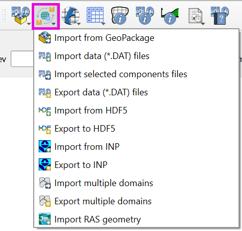

FLO-2D Import Export
The FLO-2D Import Export button facilitates the import of FLO-2D data, including *.DAT files, *.HDF5 files, and HEC-RAS channel data. It also serves as the tool for exporting FLO-2D data, providing options to export all components, selected components, or to the *.HDF5 file.
